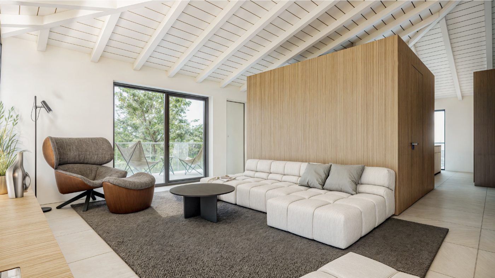
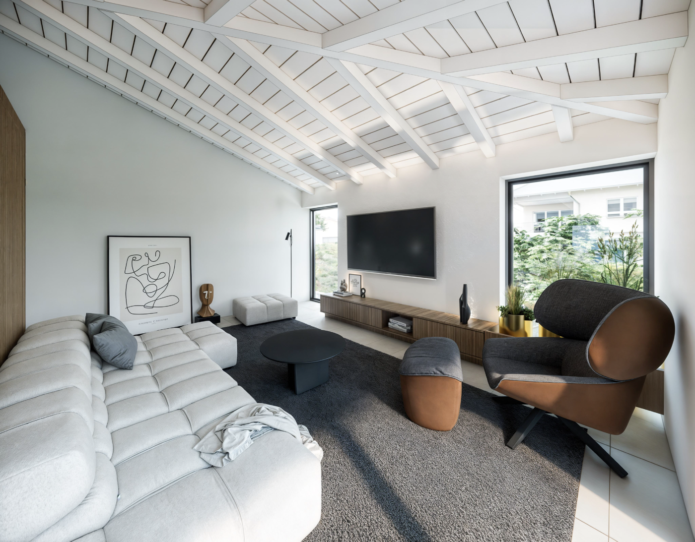

Une promotion intimiste pour propriétaires privés
Nichée au cœur du village de Vérossaz, la Résidence Cime de l'Est est une promotion à taille humaine composée de deux petits immeubles de quatre appartements chacun. Au total, seulement huit 4,5 pièces, pensés avant tout pour des propriétaires privés qui souhaitent un vrai chez-soi, dans un environnement calme et soigné.
Rien n'a été improvisé. Le projet a été travaillé dans le détail, avec l'idée de proposer des logements où l'on se projette facilement dans la durée. L'implantation des bâtiments, la gestion des vues, la lumière naturelle, la relation à l'extérieur : chaque point a été étudié pour offrir un quotidien confortable, agréable et cohérent.

Des appartements pensés pour la vraie vie
Les appartements de 4,5 pièces offrent de beaux volumes, une pièce de vie conviviale, des chambres confortables et un espace supplémentaire qui peut devenir bureau, chambre d'enfant ou chambre d'amis selon les besoins. La distribution intérieure a été réfléchie pour être simple à vivre : des circulations claires, des espaces bien définis, des ouvertures généreuses qui amènent la lumière et mettent en valeur la vue sur les montagnes.
L'objectif n'est pas seulement de proposer un bel objet sur plan, mais des intérieurs dans lesquels on se sent bien au quotidien, que ce soit pour une famille, un couple qui fait du télétravail ou des privés qui souhaitent s'installer durablement.
Une construction solide et sérieuse
La Résidence Cime de l'Est repose sur une construction traditionnelle en béton armé, synonyme de stabilité et de pérennité. L'architecture est contemporaine, mais volontairement sobre, afin de s'intégrer naturellement dans le paysage de Vérossaz et dans le caractère du village. L'ensemble a été conçu en tenant compte des spécificités du terrain et des contraintes locales, avec un souci de qualité et de sérieux qui se ressent dans le projet.
Derrière cette promotion, il y a une équipe habituée à développer des réalisations à taille humaine, qui connaît le terrain, le contexte et les attentes des clients privés. Le temps investi en amont se voit dans la cohérence des plans et dans la manière dont chaque détail contribue à la qualité de vie des futurs habitants.

Vérossaz : calme, lumière et proximité
Vérossaz offre un cadre de vie privilégié, en balcon au-dessus de la plaine du Rhône. On y profite du calme, de l'ensoleillement, des vues dégagées et d'un contact direct avec la nature, tout en restant proche des axes et des commodités. Massongex, Monthey, les commerces, les écoles et les services sont accessibles en quelques minutes.
C'est un emplacement idéal pour des particuliers qui veulent rentrer le soir dans un environnement plus serein, sans renoncer à la praticité ni à l'accessibilité.
Une adresse à considérer pour un projet de vie
La Résidence Cime de l'Est s'adresse clairement à des privés qui recherchent un appartement neuf de qualité, dans une petite PPE, avec un projet pensé pour les habitants avant tout. Entre la taille maîtrisée de la promotion, le soin apporté à la conception, la solidité de la construction et le cadre de Vérossaz, tout est réuni pour en faire une adresse à regarder de près lorsqu'on réfléchit à son prochain lieu de vie.